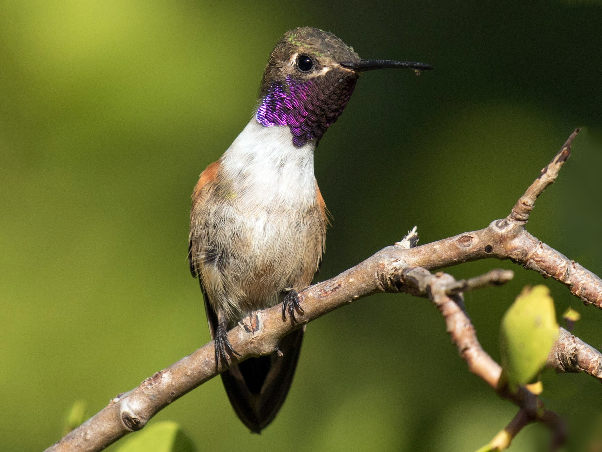

La silhouette est remarquable par le fait que le bec est court et quasiment droit. Un petit point blanc est
présent à l'arrière de l'œil. Le dos est vert irisé. La queue affiche une fourche très profonde. Le menton et la
gorge sont violet-pourpre éclatant. Les bas flancs sont roux, mettant en valeur la forme très fourchue de la
queue. Les rectrices centrales sont vertes, les autres rectrices sont partiellement roux-cannelle. Après la
période nuptiale, la couleur magenta de la gorge est remplacée par un gris éclipse.
Les femelles ont un dessus vert terne. Le menton et la gorge gris clair ont des taches circulaires avec des
petits disques verts. Une bande blanchâtre traverse la poitrine. Le ventre est roux. Les rectrices latérales
sont cannelle avec une bande subterminale noire.
Les juvéniles ressemblent beaucoup à la femelle. Comme chez tous les oisillons de cette catégorie d'âge, on
aperçoit des taches et des bigarrures sur le plumage corporel : de la cannelle sur la gorge et du magenta sur la
poitrine. Chez les jeunes femelles, les plumes du dessous ont une couleur chamois avec des liserés terminaux
gris.
Taille : 8 cm
Poids : 2 à 3 g
Ordre : Apodiformes
Famille : Trochilidés
Genre : Nesophlox
Espèce : evelynae
Les chants de la race lyrura sont légèrement plus brefs et moins sophistiqués que ceux de la race nominale. Les
chants de la race nominale sont des "prítitidee, prítitidee, prítitidee" qui ont un rythme soutenu. Des "chii"
ou des "tih" sont émis régulièrement la nuit à partir d'un perchoir.